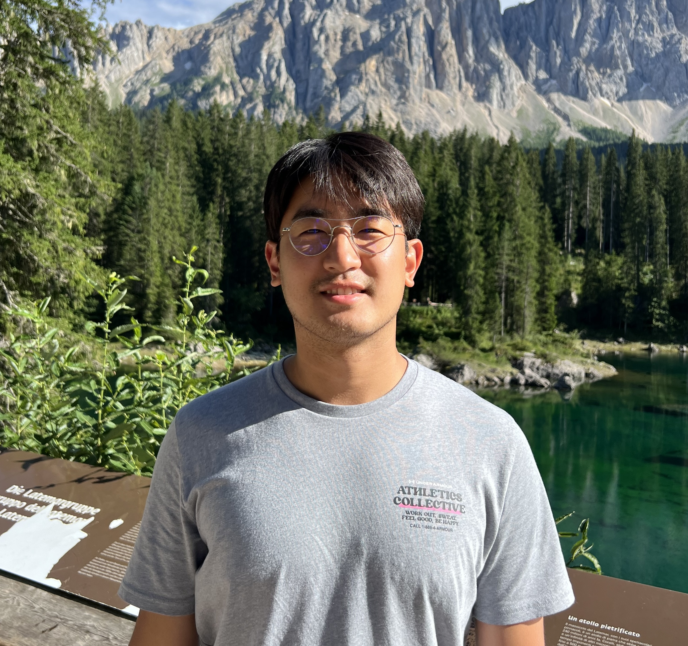

Physics Ph.D. Candidate, UIUC

Hi! I’m a 3rd year Physics Ph.D. Candidate at the University of Illinois, Urbana-Champaign, advised by Bryan K. Clark. I am currently collaborating with Ge Liu and Romit R. Choudhury.
Previously, I completed my M.S. at the Graduate School of Data Science, Seoul National University, advised by Joonseok Lee.
Before that, I completed my B.S. studying Physics and Mathematics at Seoul National University.
I’m interested in ML + Quantum, particularly using techniques in Geometric Deep Learning, and Generative Modeling.
I like to work in broad areas in the intersection of Physics, Differential Geometry, and ML.
I'm currently working on:
I am excited to work as an Research Scientist Intern at Meta Reality Labs this year (2026)! I am currently working on Generative models and Self-supervised Learning with Jogendra N. Kundu.
Feel free to contact me via email for any collaboration! Email: jh141@illinois.edu